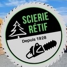
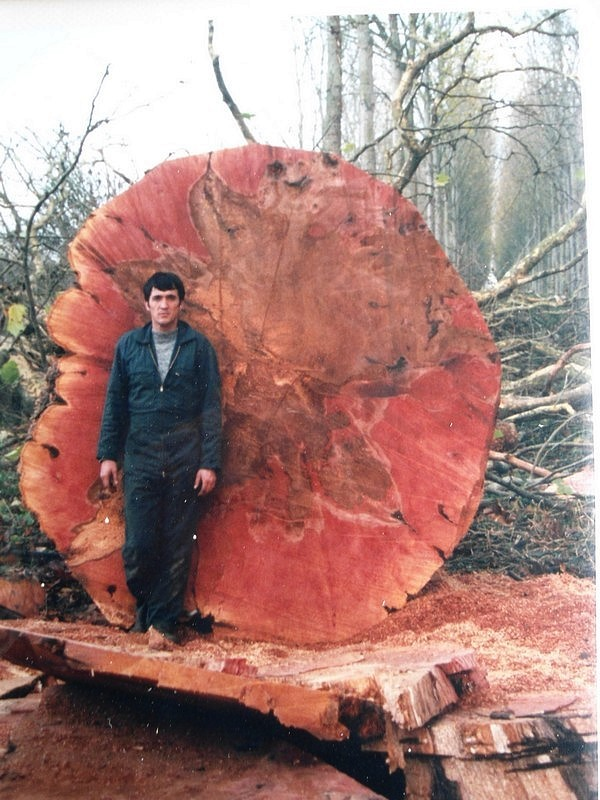
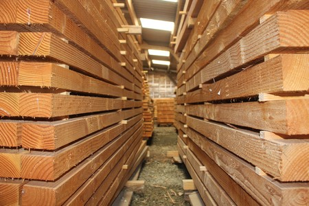
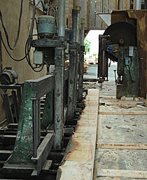
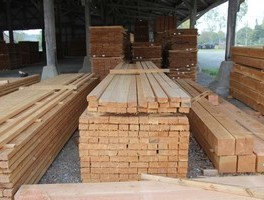
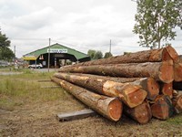
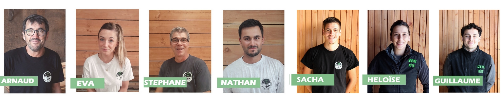

Une scierie de famille, aux portes d’Angers
Alfred Rétif crée la scierie en 1928, aux Cinq Routes. Depuis 2024, c’est Eva Rétif, la quatrième génération, qui la dirige. Notre spécialité : le Douglas, sec et à prix directs, pour les professionnels comme pour les particuliers.


Quatre générations
De 1928 à aujourd’hui, la scierie est restée dans la famille Rétif.
Notre spécialité : le Douglas
Sec, non traité, classe III, naturel, imputrescible à l’air et prêt à l’emploi.
Stocké à l’abri et séché naturellement, il s’utilise tout de suite et reste stable.
Nous proposons aussi
- Chêne
- Frêne
- Robinier
- Châtaignier
- Hêtre
- Paulownia
Et une gamme complète d’accessoires : vis, colles, connecteurs.
Le séchage naturel
Le Douglas est stocké à l’abri, et les rangs sont séparés par des lattes pour que l’air circule librement.




L’équipe 2026 à votre service
Une question sur votre projet ? Appelez le 02 41 48 00 68 ou écrivez à contact@scierie-retif.com.

Où nous trouver
À Saint-Lambert-la-Potherie, aux portes d’Angers.
Accès
Les Cinq Routes, 49070 Saint-Lambert-la-Potherie
Par la D56, à 500 m d’Atoll, au croisement des routes de Beaucouzé et de Saint-Lambert-la-Potherie.
Tél. 02 41 48 00 68
Les distances
Prix directs de Scierie !
Bois sec de construction aux portes d’Angers, pour les professionnels comme pour les particuliers.